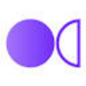

МолекулаАгрегаторы нейросетей
Молекула объединяет модели для текстов, изображений, видео и музыки. В одном аккаунте можно подобрать инструмент под этап работы, сохранить инструкции проекта и использовать готовые роли.
К задаче в МолекулеПромты и промт-инжиниринг: Укажите задачу, исходные данные и формат ответа. Проверяйте новую формулировку на том же примере, чтобы понимать эффект изменений.
Опишите задачу, исходные факты и формат ответа. Молекула предлагает разбор рабочего промпта; начните с небольшого результата, который можно сверить вручную по конкретному критерию.
Помоги улучшить мой запрос для подготовки инструкции сотруднику. Задача и исходные правила ниже. Укажи, каких данных не хватает, и предложи формат ответа с проверяемыми пунктами.

Молекула объединяет модели для текстов, изображений, видео и музыки. В одном аккаунте можно подобрать инструмент под этап работы, сохранить инструкции проекта и использовать готовые роли.
К задаче в МолекулеСравнивать «Emergent Mind (LearnGPT)» с другими инструментами раздела «Чат-боты и ассистенты» удобнее на одинаковом исходном материале.
Для «AIPRM ChatGPT» сначала определите свою задачу и требуемый результат. Карточка относится к направлению «Чат-боты и ассистенты».
Autory предназначен для организации автоматизированных цепочек с промтами, Python и API. Такой подход позволяет связывать несколько этапов обработки в один процесс. Для небольшого сценария определите вход и результат каждого шага, затем проверьте передачу данных и обработку ошибки; ответ одной модели не должен незаметно становиться доверенной инструкцией следующему этапу.
«Prompthackers» представлен в разделе «Промты и промт-инжиниринг». При выборе проверьте нужную операцию и условия работы с результатом.
«promptoMANIA» готовит визуальные материалы по заданию.
PromptWise AI помогает дорабатывать и уточнять запросы к искусственному интеллекту. Продукт предназначен для разработчиков и исследователей, а также авторов контента. Среди направлений использования есть письменные материалы и поддержка клиентов, связывающие подготовку запроса с выбранной пользователем задачей общения с ИИ.

«WNR» помогает составить сказочный сюжет.
«Knit» помогает составить сказочный сюжет.
Trickle.so Prompts Db предлагает готовые промты, которые можно изменять, сохранять и передавать другим участникам. Инструмент ориентирован на повторное использование заданий для языковых моделей. Перед переносом примера в свой процесс замените исходные данные и проверьте ограничения: опубликованная инструкция может предполагать другой материал, формат ответа или способ запуска.
«What-A-Prompt» помогает составить сказочный сюжет.
Для «Enprompt360» сначала определите свою задачу и требуемый результат. Карточка относится к направлению «Создание контента».
«Oksuro» готовит визуальные материалы по заданию.
Prompt Plus предназначен для хранения и повторного запуска подготовленных запросов. Инструмент предлагает горячие клавиши, параметры и поиск по сохранённым заданиям. Для повторяющегося процесса отделите постоянную инструкцию от новых данных, затем проверьте подстановку значений; чужой пример не должен незаметно оставаться частью следующего обращения.
«PromptLeo» представлен в разделе «ИИ-ассистент». При выборе проверьте нужную операцию и условия работы с результатом.
Для «Prompt Studio» сначала определите свою задачу и требуемый результат. Карточка относится к направлению «Промты и промт-инжиниринг».

FindPrompt рассчитан на задачи, где нужно получать изображения из словесного задания. Ещё одно направление работы: собирать видео с цифровым ведущим.
Prompt Perfect помогает составлять и дорабатывать запросы для генеративных моделей. Платформа предназначена для инженеров промптов и авторов контента, а также разработчиков ИИ. Работа связывает формулировку задания с последующим созданием материала, позволяя использовать разные языковые и визуальные модели под нужный сценарий.
Сравнивать «Promptly (chrome.google.com)» с другими инструментами раздела «Промты и промт-инжиниринг» удобнее на одинаковом исходном материале.
«Promptstacks» помогает организовать обучение по теме.
Jadve объединяет несколько текстовых моделей в русскоязычной ИИ-платформе. Доступны генерация текста, изображений и видео, библиотека запросов и помощники. Доступ предусмотрен через веб-интерфейс, Telegram, браузерные средства и Android, поэтому разные способы обращения сочетаются с несколькими направлениями подготовки контента в одном продукте.
«mancer» готовит текстовый черновик по условиям задачи.
Promptmetheus используют, чтобы писать и изменять программный код. Ещё одно направление работы: подбирать настройки и инструкции для модели.
Сравнивать «Zenprompts» с другими инструментами раздела «ИИ-ассистент» удобнее на одинаковом исходном материале.
ImAIgic предлагает библиотеку промтов с текстовым поиском и тематической классификацией. Такой набор можно использовать для изучения формулировок и поиска отправной точки для собственного задания. Перед повторением замените нужные детали сцены и проверьте модель запуска; похожая инструкция в другой среде не обязана давать тот же визуальный результат.
LaPrompt объединяет галерею и площадку с промтами для генерации изображений и видео. Пользователь может искать пример задания для выбранного визуального направления. Перед повторным использованием выясните поддерживаемую модель и необходимые настройки, а затем замените детали сцены; чужой результат не доказывает, что тот же запрос воспроизводится в вашей конфигурации.
Olle - AI Assistant предлагает средства ИИ-помощи пользователям Mac с настройкой текстовых запросов. Предусмотрена автономная библиотека подсказок и хранение данных. Основное направление касается организации собственного набора инструкций, где повторяющиеся обращения можно держать вместе и использовать в разных рабочих задачах вместо составления каждого запроса заново.
Для «Prompt Manager Pro» сначала определите свою задачу и требуемый результат. Карточка относится к направлению «Продуктивность».
Сравнивать «Prompt Silo» с другими инструментами раздела «Создание контента» удобнее на одинаковом исходном материале.
«Promptmaster» помогает организовать обучение по теме.
Сравнивать «The GPT Repo» с другими инструментами раздела «Промты и промт-инжиниринг» удобнее на одинаковом исходном материале.
Для «FlowGPT» сначала определите свою задачу и требуемый результат. Карточка относится к направлению «Чат-боты и ассистенты».
«Prompt Box» представлен в разделе «ИИ-ассистент». При выборе проверьте нужную операцию и условия работы с результатом.
Сравнивать «Prompt Genie» с другими инструментами раздела «Промты и промт-инжиниринг» удобнее на одинаковом исходном материале.
«Prompt Grip» помогает составить сказочный сюжет.
«Promptist» представлен в разделе «Промты и промт-инжиниринг». При выборе проверьте нужную операцию и условия работы с результатом.
«Promptperfect.xyz» перерабатывает формулировки написанного текста. «Promptperfect.xyz» работает с материалами для социальных площадок.

PromptBase рассчитан на задачи, где нужно собирать видеосцену по описанию или визуальному исходнику. Ещё одно направление работы: получать изображения из словесного задания.
Для «AIcyclopedia» сначала определите свою задачу и требуемый результат. Карточка относится к направлению «Промты и промт-инжиниринг».
«Prompt Storm» помогает составить сказочный сюжет.
Для «Snack Prompt» сначала определите свою задачу и требуемый результат. Карточка относится к направлению «Чат-боты и ассистенты».
«Prompter (prompter.engineer)» представлен в разделе «Промты и промт-инжиниринг». При выборе проверьте нужную операцию и условия работы с результатом.
Страница 1 из 1
Хороший промт описывает действие, исходный материал и признаки подходящего ответа. Возьмите повторяющуюся задачу: выделять из обращений клиентов тему и недостающие сведения. Сначала сформулируйте правило вручную на нескольких примерах. Это позволит понять, что нужно от модели, до выбора формулировок запроса.
В начале укажите роль задания и ограничения. Например, извлекать сведения только из обращения, не придумывать номер заказа и не обещать действие от имени магазина. Затем передайте само сообщение и ожидаемый формат. Пример с отсутствующим полем важнее ещё одного очевидного случая: именно он показывает, что делать при неопределённости.
В Google AI Studio можно работать с системными инструкциями, настройками и примерами для последующей интеграции. ChatGPT удобен для диалогового уточнения письменного задания. Возможность обсудить промт в чате не означает, что программный запрос будет иметь те же параметры: условия переноса нужно проверять отдельно.
Сохраните исходный вариант и небольшой набор обращений. После ошибки уточните конкретное правило, затем повторите подборку. Если одновременно изменить инструкцию, примеры и способ запуска, трудно понять причину нового результата. Удачный ответ на одном сообщении также не доказывает пригодность задания для других формулировок.
Добавьте случай с несколькими темами, пустой ввод и сообщение с противоречием. Проверяйте значения, а не только форму ответа. Корректная таблица может содержать придуманный номер или неверную категорию. Если нужен JSON, отдельно задайте допустимые поля и решите, как приложение будет обрабатывать неизвестное значение.
Коллеге нужен не только текст инструкции, но и примеры входа с ожидаемым поведением. Запишите, какие ошибки требуют ручной проверки и когда лучше задать уточняющий вопрос. Это помогает сохранить процесс после смены модели или интерфейса. Для программного подключения полезен раздел API и интеграций, а повседневные диалоговые задания рассматриваются в категории ИИ-ассистентов.